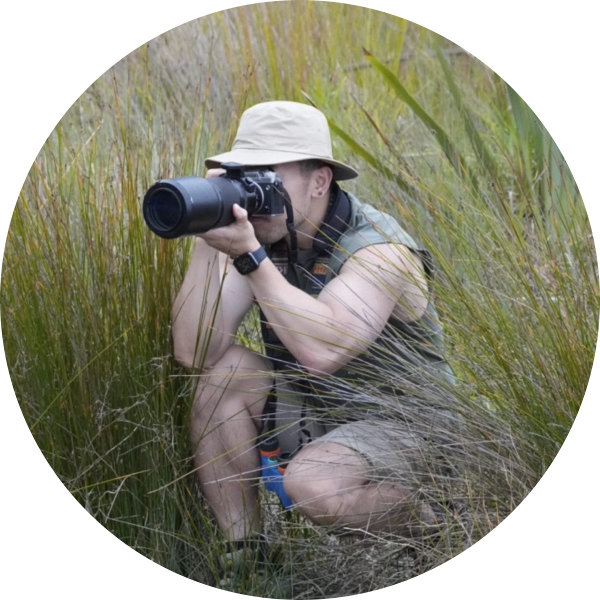

Look closely
Begin with what is already near: a bird call, a fern, a tide line or a familiar patch of sky.
About / Cullen’s Field Notes
Cullen’s Field Notes is my evolving ecological design practice: a place to share what I’m learning about the living world in Aotearoa, and invite other people to look closer too.

Kia ora, I’m Cullen
For five years, I worked as a designer across in-house, agency and corporate teams. I loved the craft of making ideas clear, useful and engaging, but I began to question where I wanted to place that energy.
A period of change gave me room to return outdoors: birdwatching, photographing wildlife, learning plant names and paying closer attention to the places I moved through. I’m now returning to university to study ecology at AUT.
Field Notes is where those two parts of my life meet. It is a living journal of my learning, and a way to use design, photography, walks and workshops to make ecological knowledge feel more welcoming, visible and shared.
What guides the work
Begin with what is already near: a bird call, a fern, a tide line or a familiar patch of sky.
Use clear words, useful tools and visual stories to make ecological knowledge easier to enter.
Understanding grows slowly. Care begins when we come back to a place, again and again.
The person behind Field Notes
Field Notes is led by me, and shaped by the people, species and places I learn alongside. It is a personal practice with an open invitation to participate.
DESIGNER · EMERGING ECOLOGIST · PHOTOGRAPHER
A LIVING PRACTICE · AOTEAROA · ALWAYS LEARNING
Work together
I welcome thoughtful collaborations, creative commissions, guided walks, workshops and conversations over coffee. If you have an idea, a question or a place worth noticing together, I’d love to hear from you.
hello@field-notes.example ↗